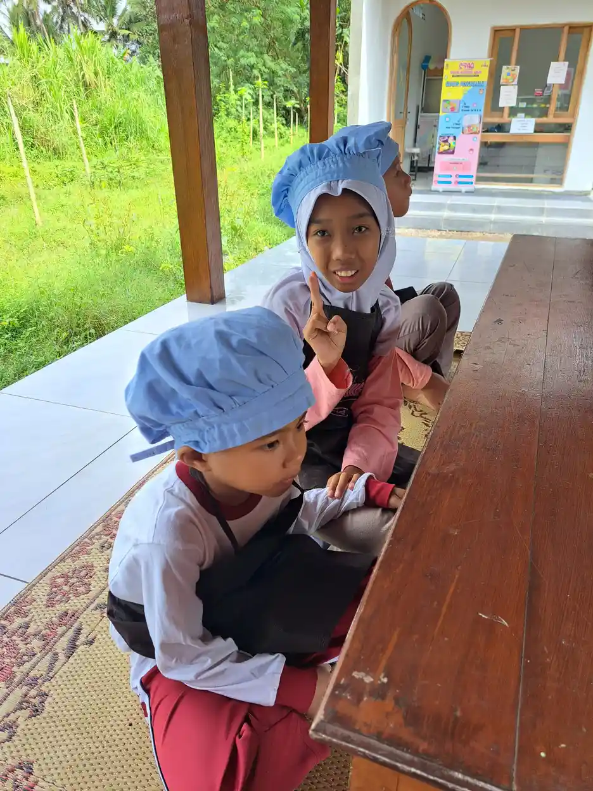
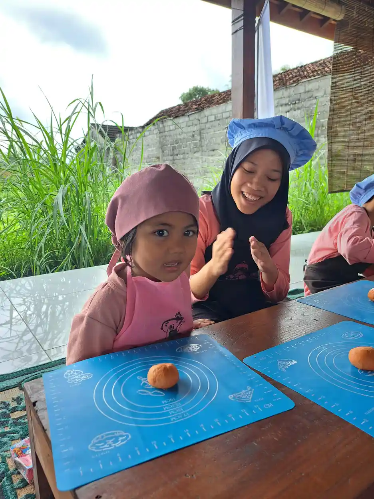

Jawaban singkat: Grief pada orang tua anak berkebutuhan khusus dapat muncul sebagai sedih, bingung, marah, takut, bersalah, atau lelah. Perasaan ini tidak berarti orang tua menolak anak. Acceptance bukan berarti berhenti mencari dukungan, melainkan menerima kondisi dan kebutuhan anak secara bertahap agar keluarga dapat menyusun langkah yang realistis, penuh hormat, dan sesuai kekuatan masing-masing.
Mendengar bahwa anak membutuhkan dukungan khusus sering mengubah banyak rencana keluarga. Sebagian orang tua perlu waktu untuk memahami istilah, mengulang pemeriksaan, mencari sekolah, berdiskusi dengan pasangan, dan menyesuaikan harapan yang sebelumnya sudah terbentuk. Pada masa itu, emosi dapat datang bergantian. Hari ini orang tua merasa siap, besok mungkin kembali sedih atau takut. Pengalaman seperti ini layak dibicarakan tanpa memberi label bahwa orang tua kurang bersyukur.
Artikel ini membahas grief dan acceptance orang tua anak ABK dengan bahasa yang praktis. Istilah ABK digunakan mengikuti topik pencarian, sedangkan kebutuhan setiap anak tetap harus dipahami secara individual. Tidak semua anak memiliki diagnosis yang sama, tidak semua keluarga melewati urutan emosi yang sama, dan tidak ada tenggat waktu yang wajib dicapai. Tujuan pembahasan ini bukan memaksa orang tua segera menerima, tetapi membantu mereka mengenali perasaan, menemukan dukungan, dan mengubah perhatian menjadi langkah kecil yang dapat dilakukan.
Daftar Isi
Apa itu grief pada orang tua anak ABK?
Grief adalah respons kehilangan atau perubahan yang bermakna. Dalam konteks orang tua anak berkebutuhan khusus, yang berubah kadang bukan kehadiran anak, melainkan gambaran masa depan yang selama ini dibayangkan. Orang tua mungkin pernah membayangkan jalur sekolah tertentu, aktivitas keluarga tertentu, atau tingkat kemandirian tertentu. Saat kebutuhan anak dipahami dengan lebih jelas, gambaran itu perlu disusun ulang. Proses menyusun ulang harapan dapat terasa seperti kehilangan, walaupun anak tetap hadir dan dicintai.
Raising Children Network menjelaskan bahwa orang tua anak dengan kebutuhan tambahan dapat mengalami berbagai perasaan, termasuk khawatir, sedih, marah, rasa bersalah, dan lega ketika akhirnya mendapat penjelasan atau dukungan. Perasaan tersebut dapat muncul bersamaan. Seorang ayah dapat merasa bangga melihat kemajuan anak sekaligus cemas menghadapi masa depan. Seorang ibu dapat menikmati kegiatan bersama anak sekaligus merasa lelah oleh urusan terapi, sekolah, pekerjaan, dan rumah. Dua hal yang tampak bertentangan dapat sama-sama benar.

Grief juga tidak selalu tampak sebagai tangisan. Ada orang tua yang menjadi sangat sibuk mencari informasi, terus berpindah layanan, sulit tidur, mudah tersinggung, menarik diri, atau merasa harus kuat setiap waktu. Respons itu tidak otomatis berarti orang tua gagal menerima anak. Namun, jika berlangsung lama dan mengganggu makan, tidur, pekerjaan, hubungan, atau kemampuan merawat diri, keluarga perlu mencari bantuan yang tepat.
Mengapa grief dapat muncul?
Ada beberapa sumber tekanan yang sering bertemu dalam satu waktu. Pertama, informasi baru dapat terasa sulit dipahami. Istilah asesmen, terapi, kebutuhan belajar, komunikasi, sensori, perilaku, dan layanan sosial memiliki arti yang berbeda-beda. Kedua, orang tua dapat menghadapi komentar keluarga besar atau masyarakat yang tidak sensitif. Ketiga, biaya, jarak, jadwal, dan antrean layanan dapat menguras tenaga. Keempat, orang tua mungkin harus membandingkan informasi yang saling bertentangan di internet.
Tekanan tidak selalu berasal dari anak. Banyak keluarga merasa sedih karena harus mengurangi jam kerja, menunda rencana pribadi, atau membagi perhatian dengan saudara kandung. Ada pula yang berduka karena kehilangan dukungan dari lingkungan setelah orang lain tidak lagi datang atau tidak memahami rutinitas keluarga. Mengakui sumber tekanan membantu keluarga berhenti menyalahkan diri sendiri secara menyeluruh. Masalah dapat dipecah menjadi hal yang bisa dibicarakan satu per satu.
Jangan mengukur kualitas pengasuhan dari seberapa cepat orang tua terlihat tenang. Ada keluarga yang langsung mencari komunitas, ada yang memerlukan waktu sebelum siap bercerita. Keduanya dapat menjadi pilihan yang sehat selama kebutuhan anak tetap diperhatikan dan orang tua tidak sendirian menghadapi beban yang terlalu berat.
Acceptance bukan berarti menyerah
Acceptance sering disalahpahami sebagai berhenti berharap. Dalam pengasuhan anak ABK, acceptance lebih dekat dengan kemampuan melihat anak sebagaimana adanya, memahami dukungan yang dibutuhkan, lalu menyusun harapan yang berangkat dari kondisi nyata. Orang tua tetap boleh menginginkan anak belajar, berkomunikasi, bermain, memiliki teman, atau semakin mandiri. Yang berubah adalah cara menetapkan tujuan dan ukuran kemajuan.
Contohnya, keluarga mungkin awalnya menargetkan anak langsung dapat mengikuti seluruh kegiatan kelas. Setelah memahami kebutuhan anak, target dapat dipecah menjadi mampu masuk ruangan tanpa distress, mengikuti satu kegiatan selama beberapa menit, meminta jeda, atau menggunakan alat bantu komunikasi. Target yang lebih terukur bukan target yang lebih rendah. Target itu membantu anak dan orang tua melihat kemajuan yang benar-benar terjadi.
Acceptance juga bukan alasan untuk mengabaikan akses layanan. Orang tua tetap dapat berkonsultasi dengan tenaga profesional, menanyakan penyesuaian belajar, meminta akomodasi yang wajar, dan mengevaluasi apakah pendekatan yang dipakai sesuai kebutuhan anak. Untuk memahami dukungan di aktivitas sehari-hari, baca juga artikel tentang terapi okupasi. Jika keluarga sedang mempelajari kondisi tertentu, gunakan penjelasan dasar cerebral palsy sebagai bahan percakapan, bukan sebagai pengganti asesmen. Bacaan lain tentang terapi okupasi untuk anak cerebral palsy, perbedaan terapi okupasi dan terapi wicara, terapi pijat anak cerebral palsy, serta skoliosis pada anak cerebral palsy dapat dibaca sesuai kebutuhan informasi keluarga. Pusat Pengendalian dan Pencegahan Penyakit Amerika Serikat menekankan pentingnya memantau perkembangan dan berbicara dengan tenaga kesehatan ketika ada kekhawatiran. Pada praktiknya, keluarga dapat membawa catatan observasi agar percakapan lebih terarah.
| Harapan yang perlu disusun ulang | Pendekatan yang lebih realistis |
|---|---|
| Anak harus mengikuti semua aktivitas dengan cara yang sama seperti teman sebaya. | Identifikasi bagian aktivitas yang penting, lalu siapkan penyesuaian, jeda, atau cara komunikasi yang sesuai. |
| Kemajuan harus selalu cepat dan terlihat setiap hari. | Catat perubahan kecil, pola tidur, kemampuan meminta bantuan, toleransi terhadap rutinitas, dan pemulihan setelah kesulitan. |
| Orang tua harus mampu menangani semuanya sendiri. | Bagikan tugas, minta dukungan keluarga, dan gunakan layanan profesional atau komunitas yang kredibel. |
Mengenali pola emosi tanpa mengotakkan diri
Banyak tulisan menggambarkan grief melalui tahap seperti penyangkalan, marah, tawar-menawar, sedih, dan penerimaan. Kerangka itu dapat membantu sebagian orang memberi nama pada pengalaman, tetapi bukan jadwal wajib dan bukan alat diagnosis. Orang tua dapat berpindah dari sedih ke marah, merasa lega lalu takut lagi, atau tidak merasakan semua tahap tersebut. Pengalaman yang tidak sesuai daftar tetap valid.
1. Beri nama pada perasaan
Cobalah menulis satu kalimat sederhana: “Saya sedang takut menghadapi sekolah,” “Saya lelah menjelaskan kondisi anak,” atau “Saya sedih karena rencana keluarga berubah.” Memberi nama pada perasaan membuat kebutuhan lebih mudah dilihat. Takut mungkin membutuhkan informasi. Lelah mungkin membutuhkan pembagian tugas. Sedih mungkin membutuhkan teman bicara. Perasaan bukan perintah untuk mengambil keputusan tergesa-gesa.
2. Pisahkan fakta, prediksi, dan komentar orang
Fakta adalah hal yang sudah diamati atau dijelaskan oleh tenaga profesional. Prediksi adalah dugaan tentang masa depan. Komentar orang lain adalah pendapat yang belum tentu sesuai kondisi anak. Tiga hal ini sering bercampur sehingga kecemasan terasa seperti kepastian. Buat tiga kolom di catatan keluarga. Tulis apa yang diketahui, apa yang belum diketahui, dan pertanyaan yang akan dibawa saat konsultasi berikutnya.
3. Beri ruang bagi pasangan untuk memiliki proses berbeda
Pasangan tidak selalu merespons dengan cara yang sama. Satu orang mungkin ingin segera mencari terapi, sementara yang lain perlu waktu untuk memahami informasi. Perbedaan cara merespons tidak otomatis berarti salah satu lebih menyayangi anak. Jadwalkan percakapan singkat ketika keduanya cukup tenang. Gunakan kalimat “Saya membutuhkan...” daripada “Kamu selalu...”. Fokuskan pembicaraan pada kebutuhan anak dan beban yang sedang dirasakan.

Langkah praktis untuk membantu proses acceptance
Buat peta kebutuhan anak, bukan daftar kekurangan
Mulai dengan pertanyaan yang konkret. Kapan anak paling mudah berkomunikasi? Suara, cahaya, tekstur, keramaian, atau perubahan apa yang biasanya membuat anak kewalahan? Aktivitas apa yang disukai? Apa yang membantu anak kembali tenang? Catatan seperti ini membantu keluarga dan sekolah merancang dukungan berdasarkan pengamatan. Gunakan bahasa netral dan hindari menyimpulkan niat anak dari perilaku yang belum dipahami.
Pilih satu prioritas keluarga untuk dua minggu
Daftar kebutuhan dapat sangat panjang. Memilih satu prioritas mencegah keluarga merasa harus memperbaiki semuanya sekaligus. Prioritas dapat berupa rutinitas pagi, cara meminta jeda, komunikasi dengan guru, atau pembagian jadwal pengasuhan. Tentukan tanda keberhasilan yang bisa diamati. Setelah dua minggu, evaluasi apa yang membantu dan apa yang perlu diubah. Pendekatan bertahap memberi kesempatan untuk belajar tanpa menjadikan rumah seperti ruang ujian.
Bangun ritual percakapan yang aman
Luangkan waktu singkat untuk mengecek perasaan setiap anggota keluarga. Anak dapat menjawab dengan kata, gambar, pilihan kartu, gerak tubuh, atau alat komunikasi yang biasa digunakan. Saudara kandung juga perlu didengar tanpa diberi peran sebagai pengasuh utama. Orang tua dapat membuat aturan bahwa tidak semua percakapan harus berakhir dengan solusi. Kadang-kadang seseorang hanya membutuhkan pendengar yang tidak menghakimi.
Jaga kebutuhan dasar orang tua
Tidur, makan, jeda, gerak badan ringan, ibadah, dan pertemanan sering menjadi hal pertama yang hilang ketika keluarga sedang fokus pada layanan anak. Padahal, kemampuan orang tua untuk merespons dengan sabar dipengaruhi kondisi tubuh dan pikirannya. Minta bantuan yang spesifik, misalnya menjaga anak selama satu jam, mengantar ke sekolah pada hari tertentu, atau menyiapkan makanan. Permintaan spesifik biasanya lebih mudah dijawab daripada “Tolong bantu saya” yang terlalu umum.

Membangun dukungan di rumah dan sekolah
Dukungan yang baik tidak hanya berupa nasihat. Dukungan dapat berbentuk akses informasi, penyesuaian lingkungan, pengaturan jadwal, atau kehadiran orang yang mau mendengarkan. Saat memilih komunitas, perhatikan apakah percakapannya menghormati privasi anak, tidak menjanjikan hasil instan, dan tidak memaksa semua keluarga mengikuti satu metode. Sumber yang kredibel biasanya menjelaskan keterbatasan informasi dan mendorong keluarga berdiskusi dengan profesional yang sesuai.
Dengan sekolah, bawa catatan yang singkat dan berguna. Tulis kekuatan anak, pemicu yang sudah diketahui, cara komunikasi yang efektif, strategi menenangkan diri, dan hal yang sebaiknya dihindari. Tanyakan siapa kontak utama ketika ada perubahan. Kesepakatan tertulis membantu mengurangi salah paham dan membuat orang tua tidak harus menjelaskan dari awal setiap kali berbicara dengan petugas yang berbeda. Untuk topik keluarga, panduan mendampingi sibling anak berkebutuhan khusus dapat menjadi bahan diskusi. Untuk rutinitas rumah, panduan mengatur waktu tidur anak autis menawarkan contoh memecah target menjadi langkah kecil.
Raising Children Network menyarankan orang tua mencari dukungan dari keluarga, teman, kelompok sebaya, dan layanan yang memahami kebutuhan anak. NHS juga menekankan bahwa merawat anak dengan disabilitas dapat menuntut energi besar dan orang tua berhak mencari bantuan. Dukungan bukan tanda bahwa keluarga tidak mampu. Dukungan adalah bagian dari perencanaan pengasuhan yang berkelanjutan.
Kapan perlu bantuan profesional?
Carilah bantuan profesional apabila kesedihan, kecemasan, kemarahan, rasa bersalah, atau kelelahan terasa sangat kuat, menetap, dan mengganggu fungsi sehari-hari. Tanda lain yang perlu diperhatikan antara lain sulit tidur berkepanjangan, kehilangan minat pada hampir semua hal, sering mengalami serangan panik, konflik rumah tangga yang meningkat, penggunaan alkohol atau obat untuk menenangkan diri, serta pikiran untuk menyakiti diri atau orang lain.
Untuk keadaan darurat atau ketika ada risiko keselamatan, hubungi layanan gawat darurat setempat atau pergi ke fasilitas kesehatan terdekat. Untuk kebutuhan yang tidak darurat, orang tua dapat memulai dari psikolog, psikiater, dokter, konselor, pekerja sosial, atau tenaga profesional lain sesuai masalah yang dihadapi. Sampaikan bahwa konteksnya adalah pengasuhan anak dengan kebutuhan khusus agar bantuan dapat disusun dengan lebih relevan.
Orang tua juga dapat meminta dukungan profesional tanpa menunggu keadaan menjadi sangat berat. Satu atau dua sesi untuk memetakan beban, memperbaiki komunikasi pasangan, atau menyusun rutinitas dapat menjadi langkah pencegahan. Pilih layanan yang menghargai martabat anak, tidak menyalahkan keluarga, menjelaskan tujuan intervensi, dan bersedia meninjau kembali pendekatan berdasarkan respons anak.

Penutup: acceptance dibangun melalui langkah kecil
Grief dan acceptance dapat hadir bergantian dalam perjalanan orang tua anak ABK. Orang tua tidak perlu menunggu semua rasa takut hilang untuk mulai menyusun dukungan. Cukup pilih satu informasi yang perlu diklarifikasi, satu rutinitas yang ingin dibantu, atau satu orang yang dapat diajak berbagi tugas. Kemajuan keluarga tidak selalu terlihat sebagai perubahan besar. Kadang kemajuan itu berupa orang tua yang berani meminta jeda, anak yang berhasil menyampaikan kebutuhan, atau pasangan yang akhirnya dapat berbicara tanpa saling menyalahkan.
Anak tidak harus memenuhi gambaran orang lain agar layak dihargai. Keluarga juga tidak harus menjalani proses dengan kecepatan yang sama. Dengan informasi yang dapat dipercaya, dukungan yang aman, dan bantuan profesional ketika dibutuhkan, acceptance dapat tumbuh sebagai cara baru untuk melihat kekuatan, kebutuhan, dan masa depan anak secara lebih nyata.
Pertanyaan yang Sering Diajukan
Apakah grief orang tua anak ABK berarti mereka tidak menerima anaknya?
Tidak. Grief dapat muncul karena perubahan harapan, tekanan layanan, komentar lingkungan, atau kekhawatiran tentang masa depan. Orang tua dapat merasa sedih dan tetap sangat mencintai serta menerima anaknya.
Berapa lama proses acceptance orang tua anak ABK?
Tidak ada batas waktu yang sama untuk semua keluarga. Prosesnya dapat berulang dan berubah mengikuti informasi, usia anak, kebutuhan sekolah, kondisi keluarga, dan dukungan yang tersedia.
Apa perbedaan acceptance dengan menyerah?
Acceptance berarti melihat kondisi dan kebutuhan anak secara realistis lalu menyusun dukungan serta tujuan yang sesuai. Menyerah berarti berhenti berupaya. Orang tua yang menerima tetap dapat mencari layanan, meminta akomodasi, dan mendukung perkembangan anak.
Bagaimana cara membantu pasangan yang sedang berduka?
Dengarkan tanpa buru-buru membantah atau memberi nasihat. Tanyakan bantuan yang dibutuhkan, bagikan tugas pengasuhan secara konkret, dan ajak mencari bantuan profesional jika perasaan mulai mengganggu fungsi sehari-hari.
Bagaimana jika keluarga besar tidak memahami kondisi anak?
Berikan penjelasan singkat tentang kebutuhan anak dan cara membantu yang spesifik. Tetapkan batas terhadap komentar yang menyalahkan. Jika perlu, libatkan tenaga profesional atau sumber edukasi yang kredibel.
Kapan orang tua perlu menemui psikolog atau tenaga profesional?
Pertimbangkan bantuan ketika sedih, cemas, marah, bersalah, atau lelah menetap dan mengganggu tidur, pekerjaan, hubungan, atau pengasuhan. Cari bantuan segera jika ada pikiran untuk menyakiti diri atau orang lain.
Bagaimana menjelaskan acceptance kepada saudara kandung?
Gunakan bahasa yang sesuai usia, jelaskan bahwa setiap anggota keluarga memiliki kebutuhan berbeda, dan beri ruang bagi saudara kandung untuk menyampaikan perasaan. Jangan menjadikan saudara kandung sebagai pengasuh utama tanpa dukungan orang dewasa.
Apakah orang tua harus selalu terlihat kuat di depan anak?
Tidak. Orang tua boleh menunjukkan emosi secara aman dan memberi contoh cara meminta bantuan. Yang penting, anak tidak dibebani untuk menenangkan orang tua dan tetap mendapat penjelasan serta dukungan sesuai usianya.
Bacaan Terkait
Sumber dan Referensi
- Raising Children Network: Parents feelings when your child has additional needs
- Raising Children Network: Disability and family life
- NHS: How to care for a disabled child
- CDC: Essentials for Parenting Toddlers and Preschoolers
- Cleveland Clinic: Grief
Catatan: Artikel ini bersifat edukasi umum dan bukan pengganti konsultasi dengan psikolog, tenaga kesehatan, atau petugas layanan sosial resmi. Sumber diakses dan diperiksa pada 12 Oktober 2026. Informasi digunakan untuk kerangka edukasi umum, bukan untuk menetapkan diagnosis atau menggantikan penilaian profesional.